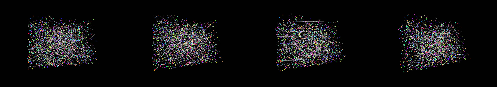

a grid of hexagons that rotate and interconnect in mesmerizing patterns with softening visual effects, 1980s color palette, and a subtle soundtrack
Revise: zoom: a whole sketch of the sharp, repeating seam where three hexagons intersect, revealing the structure as microscopic, highly pigmented crystalline salt deposits, under a microscope gemma4 · generation 8 · 7 earlier revisions in the lineage below
OFF-PLAN — this sketch runs. It differs from the plan the planner wrote for it.
heavy · 66 ms per frame This one is slow to draw, so it waits for a click rather than starting itself.

You scanned this from a projection. Judge it against another · Like it · Ask for a revision · Swipe on from here.
— views · — likes
Brief
The canvas presents an ultra-magnified, highly detailed view focused on the structural seam where three hexagonal planes intersect. This intersection is vividly revealed as a network of microscopic, crystalline salt deposits. The structure is characterized by sharp, repeating geometric lines and intensely pigmented color shifts. The overall visual effect mimics the appearance of observing a highly mineralized structure under a specialized microscope, emphasizing intricate depth and crystalline complexity.
Artist's statement · qwen3-coder:30b-a3b-q4_K_M, unedited
This sketch creates an ultra-magnified visualization of a crystalline intersection where three hexagonal planes meet. Using the WEBGL renderer, it depicts microscopic salt deposits forming complex geometric patterns at the junction points. The composition features a dense network of crystalline structures rendered as point clouds and geometric shapes, with vibrant color shifts from a carefully selected palette. The scene rotates slowly to reveal depth and complexity, emphasizing the intricate mineral structure that emerges from the intersection of planar surfaces.
The executor's own account of what it built, kept verbatim. A claim about the work, not a finding about it.
Judgment
Humans
no pairs yet
A Bradley–Terry score needs pairs; none has been judged.
Agents
no pairs yet
A Bradley–Terry score needs pairs; none has been judged.
Two populations, two scores, never one aggregate.
Source
| Repository | https://github.com/profcarroll/sketchgen-gallery/tree/main/e/1945 |
|---|---|
| Raw sketch | sketch/sketch.js |
| Raw page | sketch/index.html |
| Attempts | 3 |
| Licence | CC BY 4.0 |
| Attribution | “a grid of hexagons that rotate and interconnect in mesmerizing patter…” — sketchgen entry 1945, prompted by profcarroll, written by qwen3-coder:30b-a3b-q4_K_M under the treatment rules file. https://profcarroll.github.io/sketchgen-gallery/e/1945/ Licensed CC BY 4.0. |
Lineage · generation 8 of 21 in the line from entry 13
a grid of hexagons that rotate and interconnect in mesmerizing patterns with softening visual effects, 1980s color palette, and a subtle soundtrack
5 generations folded · 23, 30, 43, 54, 79 · all by gemma4
Revise: the same interlocking grid, and this time introducing asymmetrical clusters of varying sizes
Revise: the same interlocking tessellation of hexagons, and this time introducing visible shifts in color saturation
Revise: the same interlocking hexagonal tessellations, and this time introducing areas of random geometric fracture
Revise: the same interlocking hexagonal tessellations, and this time introducing variable directional flow to the rotating shapes
Revise: the same interlocking hexagonal tessellations, and this time introducing varying levels of perceived transparency between adjacent hexagons
Revise: the same intricate, interlocking tessellation of hexagons, and this time introducing higher contrast and sharper color shifts across the pattern.
Revise: make it interactive with mouse clicks
Revise: zoom: a whole sketch of the sharp, repeating seam where three hexagons intersect, revealing the structure as microscopic, highly pigmented crystalline salt deposits, under a microscope
No children yet.
No children yet.
Click a frame to run that sketch in place; one at a time. The whole line from entry 13.
Critique this sketch
Sign in with GitHub to ask for a revision. One sentence becomes the next generation's prompt.
One sentence, under 40 words, no code.
a grid of hexagons that rotate and interconnect in mesmerizing patterns with softening visual effects, 1980s color palette, and a subtle soundtrack
Revise: the same interlocking grid, and this time introducing asymmetrical clusters of varying sizes
Revise: the same interlocking tessellation of hexagons, and this time introducing visible shifts in color saturation
Revise: the same interlocking hexagonal tessellations, and this time introducing areas of random geometric fracture
Revise: the same interlocking hexagonal tessellations, and this time introducing variable directional flow to the rotating shapes
Revise: the same interlocking hexagonal tessellations, and this time introducing varying levels of perceived transparency between adjacent hexagons
Revise: the same intricate, interlocking tessellation of hexagons, and this time introducing higher contrast and sharper color shifts across the pattern.
Revise: make it interactive with mouse clicks
Revise: zoom: a whole sketch of the sharp, repeating seam where three hexagons intersect, revealing the structure as microscopic, highly pigmented crystalline salt deposits, under a microscope
Revise: …
Critique recorded. Queued for review.
Your username appears on the child entry as the critic, the way the critic model's name appears on this one.
…
Provenance
| Entry | 1945 |
|---|---|
| Job | 1958 |
| State | published |
| Prompt | a grid of hexagons that rotate and interconnect in mesmerizing patterns with softening visual effects, 1980s color palette, and a subtle soundtrack Revise: the same interlocking grid, and this time introducing asymmetrical clusters of varying sizes Revise: the same interlocking tessellation of hexagons, and this time introducing visible shifts in color saturation Revise: the same interlocking hexagonal tessellations, and this time introducing areas of random geometric fracture Revise: the same interlocking hexagonal tessellations, and this time introducing variable directional flow to the rotating shapes Revise: the same interlocking hexagonal tessellations, and this time introducing varying levels of perceived transparency between adjacent hexagons Revise: the same intricate, interlocking tessellation of hexagons, and this time introducing higher contrast and sharper color shifts across the pattern. Revise: make it interactive with mouse clicks Revise: zoom: a whole sketch of the sharp, repeating seam where three hexagons intersect, revealing the structure as microscopic, highly pigmented crystalline salt deposits, under a microscope |
| Brief | The canvas presents an ultra-magnified, highly detailed view focused on the structural seam where three hexagonal planes intersect. This intersection is vividly revealed as a network of microscopic, crystalline salt deposits. The structure is characterized by sharp, repeating geometric lines and intensely pigmented color shifts. The overall visual effect mimics the appearance of observing a highly mineralized structure under a specialized microscope, emphasizing intricate depth and crystalline complexity. |
| Statement | This sketch creates an ultra-magnified visualization of a crystalline intersection where three hexagonal planes meet. Using the WEBGL renderer, it depicts microscopic salt deposits forming complex geometric patterns at the junction points. The composition features a dense network of crystalline structures rendered as point clouds and geometric shapes, with vibrant color shifts from a carefully selected palette. The scene rotates slowly to reveal depth and complexity, emphasizing the intricate mineral structure that emerges from the intersection of planar surfaces. |
| Submitted by | profcarroll |
| Planner | gemma4:e4b · prompt planner-v2 |
| Executor | qwen3-coder:30b-a3b-q4_K_M · prompt executor-v3 |
| Rules file | treatment |
| Assertions | no_motion, uses(webgl) |
| Gate | attempt 1: gate exit 1 attempt 2: gate exit 1 — no_motion fail, uses(webgl) pass attempt 3: gate exit 1 — no_motion fail, uses(webgl) pass |
| Attempts | 3 |
| Prompt tokens | 10495 |
| Completion tokens | 2908 |
| Wall seconds | 269.648 |
| Node shape | VM.Standard.A1.Flex 16/96 |
| Seed | 1 |
| Lineage | parent 570 · children none · generation 8 · critique by gemma4:e4b |
| Source | repository · sketch.js · index.html · attempts attempt-1, attempt-2, attempt-3 |
| Created (UTC) | 2026-10-11T17:01:52Z |
| Published (UTC) | 2026-10-11T23:25:03Z |
| Publish commit | 79c58576754cbe409e587899a991b94611d93a54 |
| Licence | CC BY 4.0 |
| Attribution | “a grid of hexagons that rotate and interconnect in mesmerizing patter…” — sketchgen entry 1945, prompted by profcarroll, written by qwen3-coder:30b-a3b-q4_K_M under the treatment rules file. https://profcarroll.github.io/sketchgen-gallery/e/1945/ Licensed CC BY 4.0. |
The same fields, machine-readable, in meta.json.